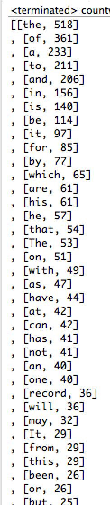

Week 12 Ex. 1: Change our definition of the compareTo method so the data shows the most frequent words at the top.
Output:

Source Code:
package CSIS2420unit2;
public class OrderedPair implements Comparable{
public String key;
public Integer value;
public OrderedPair(String word, Integer freq){
key = word;
value = freq;
}
public boolean equals(Object o){
if(!(o instanceof OrderedPair)){
return false;
}
OrderedPair op = (OrderedPair) o;
return op.value.equals(this.value);
}
public int hashCode(){
return value;
}
public String toString() {
return "[" + key + ", " + value + "]\n";
}
public int compareTo(OrderedPair op) {
return ( op.value - this.value);
}
}